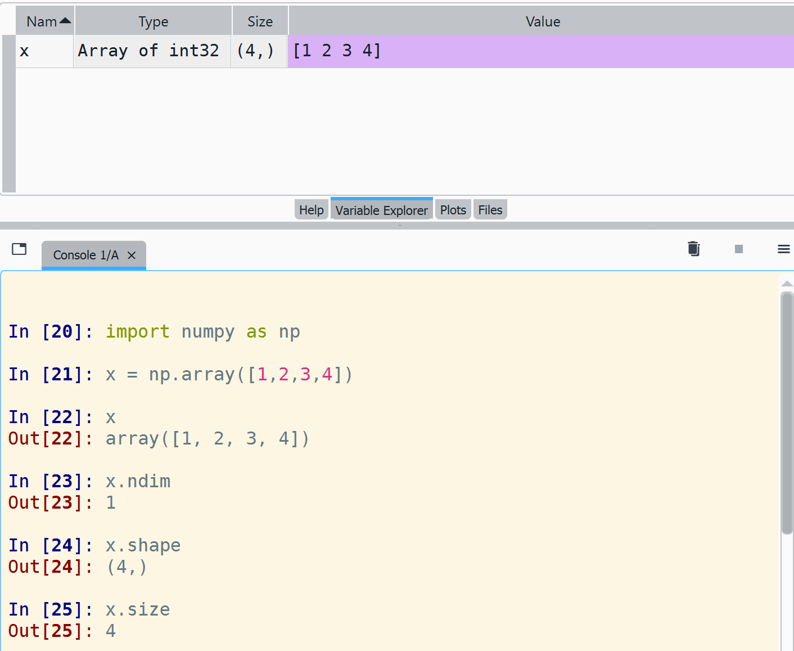
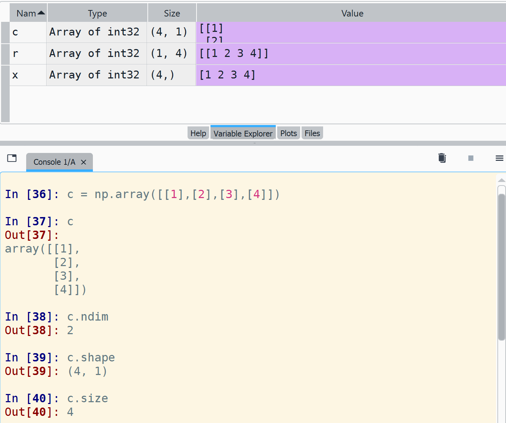
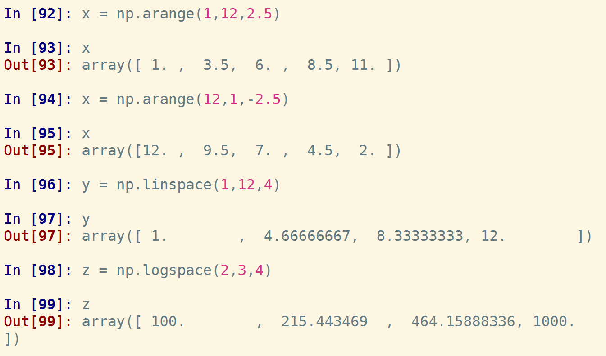
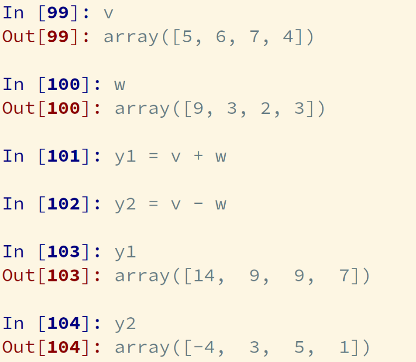
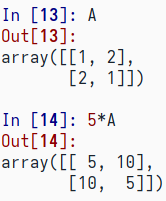
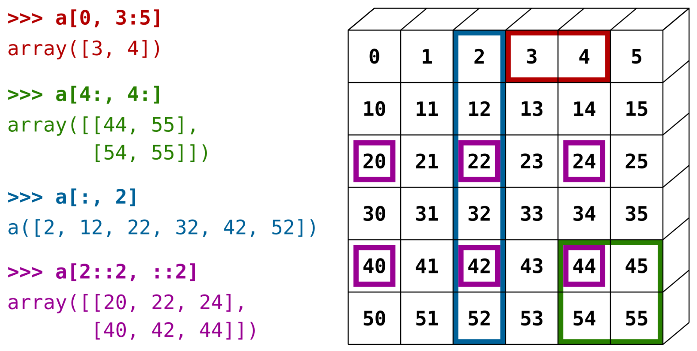
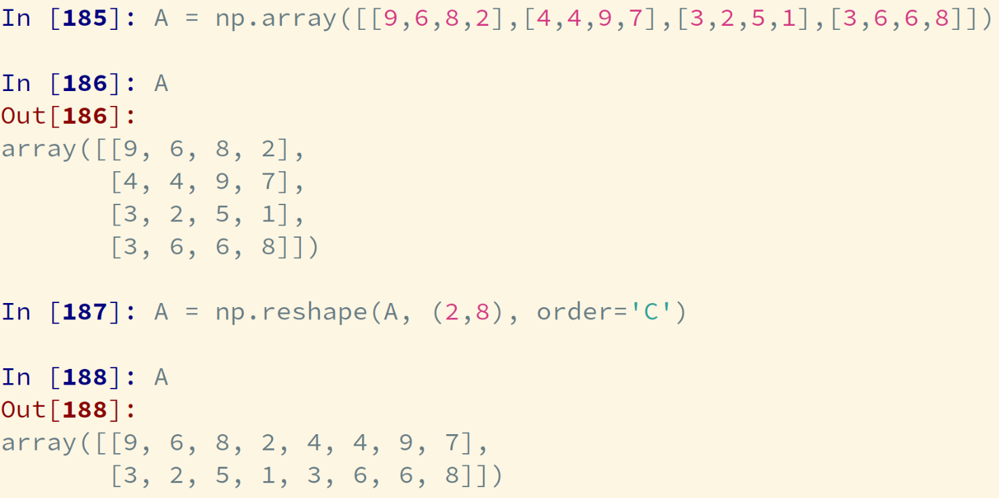
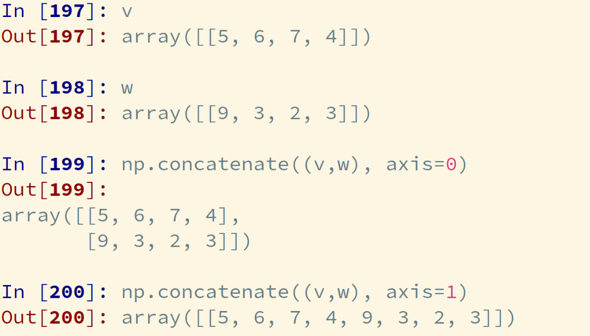
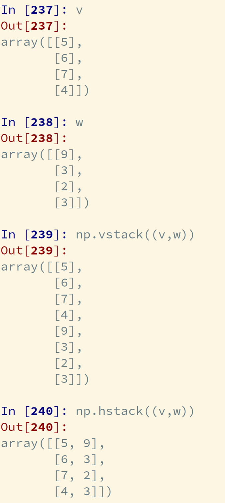

ES118 Lecture #11
arrays
Ufuk Baler, MSc. & Asst. Prof. Dr. Fethi Okyar
Arrays
- An array can store multiple numerical values
- Algebraic operations such as \[\vec A = \mathbf X \vec b\] can be defined using arrays
- Data analytics can be done using arrays
NumPy
NumPy is a library for the Python programming language, adding support for large, multi-dimensional arrays and matrices, along with a large collection of high-level mathematical functions to operate on these arrays.
Remark: vectors and matrices
row vector
column vector
matrix
Creating arrays
1-D array definition Using 1-D arrays it is possible to define row and column vectors
or

2-D array definition Using 2-D arrays it is also possible to define row and column vectors

2-D array definition (cont.)

2-D array definition Using 2-D arrays it is also possible to define matrices

np.zeros()
Creates an array full of zeros.
np.zeros(m) (1-D case)
np.zeros((m,n)) (2-D case)
np.ones()
Creates an array full of ones.
np.ones(m) (1-D case)
np.ones((m,n)) (2-D case)
np.eye()
Creates an array for the diagonal consists of ones (identity matrix)
np.eye(m) (2-D square matrix case)
np.eye(m,n) (2-D case)


np.diag(array, k) creates a diagonal array which puts the array on the k \(^{\text{th}}\) diagonal,


np.arange()
np.arange(start, end, increment) creates arrays with fixed increments
np.linspace()
np.linspace(left_boundary, right_boundary, number_of_elements) creates evenly spaced numbers over a specified interval
np.logspace()
np.logspace(start, stop, number_of_elements) creates a logarithmically spaced vector in \(\Big[10^{\text{[start]}}, 10^{\text{[stop]}}\Big]\)

Algebraic operations
addition & subtraction
Look at the values of \(\vec y_1\) and \(\vec y_2\) on the right!
Note!!: although mathematically the vectors in this example are shown as row vectors, they can be defined as 1-D or 2-D with NumPy, does not matter.

Look at the values of \(\mathbf C_1\) and \(\mathbf C_2\) on the right!

vector-vector multiplication
\[x = \vec v \vec w\]
Note!!: we can use three operators for multiplication
np.matmul()np.dot()@

matrix-vector multiplication
\[\vec b = \mathbf A \vec w\]
Note!!: we can use the same three multiplication operators as shown before

matrix-matrix multiplication
\[\mathbf C = \mathbf A \mathbf B\] where
Note!!: we can use the same three multiplication operators as shown before

scalar-array multiplication
Note!!:
- the constant \(c\) is multiplied with each element of \(\mathbf A\)
- this rule is also valid for vectors

Example computation: \[\vec d_{(3,)} = \vec x_{(3,)} \mathbf M_{(3,4)} \mathbf L_{(4,3)} + \vec c_{(3,)}\]
(see the NumPy dimensions in the parantheses, they must match!!)
where
\[\vec x = \begin{bmatrix}1 & 0 & 0\end{bmatrix}\]
\[\vec c = \begin{bmatrix}4 & 4 & 4\end{bmatrix}\]
\[\mathbf M = \begin{bmatrix}3 & 0 & 0 & 0\\0 & 3 & 0 & 0\\0 & 0 & 3 & 0 \end{bmatrix} \mathbf L = \begin{bmatrix}1 & 0 & 0 \\0 & 1 & 0 \\0 & 0 & 1 \\0 & 0 & 0 \end{bmatrix}\]

or we can use @ operator:

inverting a matrix
Example: \[\mathbf A \vec x = \vec b\]
\(\mathbf A\) and \(\vec b\) are known. We need to find \(\vec x\).
\[\mathbf A^{-1} \mathbf A \vec x = \mathbf A^{-1} \vec b\]
\(\mathbf A^{-1}\) is the inverse of \(\mathbf A\)
We know \(\mathbf A^{-1} \mathbf A = \mathbf I \ \text{(identity matrix)}\)
\[\vec x = \mathbf A^{-1} \vec b\]
First compute \(\mathbf A^{-1}\) using np.linalg.inv(A) then compute \(\vec x\).

Element-wise arithmetic
Algebraic operations on matrices and vectors obeys the rules of algebra.
In addition to algebraic operations, we can use arithmetic operators on arrays.
scalar & array
The scalar value is distributed over the elements of array
addition & subtraction
division
multiplication (remark)

exponentiation
array & array
Arithmetic operators can also be applied on two arrays
addition & subtraction (remark)
division
multiplication
exponentiation
Indexing & slicing
- It is a way of selecting elements in an array
- Indices starts from 0
- We can slice an array using the syntax below in square brackets
- vectors: v[start:stop:increment]
- matrices: M[start:stop:increment,start:stop:increment]

We can also use fancy slicing as depicted below,

Array manipulation
- Reshaping
- Joining
- Deleting
- Changing elements
- Transpose
- Copying arrays
Reshaping
np.reshape(array, new_shape, order)
- changes the shape of an array
ordercan take'C': row ordering'F': column ordering
order='C':

order='F':

Reshape the given (4,) 1-D array to an (2,2) 2-D array:
v = [5, 6, 7, 4] \(_{(4,)}\)
=> v = [[5, 6], [7, 4]] \(_{(2,2)}\)

Joining
np.concatenate((array1, array2), axis)- arrays must have the same shape!
- joins two arrays on the given
axisaxis = 0first axis of the arrayaxis = 1second axis of the array (if any)
Join the given 1-D arrays:
v = [5, 6, 7, 4] \(_{(4,)}\)
w = [9, 3, 2, 3] \(_{(4,)}\)


Error occurs because there is only one axis!!
Join the given 2-D arrays on both axes:
v = [[5, 6, 7, 4]] \(_{(1,4)}\)
w = [[9, 3, 2, 3]] \(_{(1,4)}\)

Join the given 2-D arrays on both axes:
A = [[5, 6],[7, 4]] \(_{(2,2)}\)
B = [[9, 3], [2, 3]] \(_{(2,2)}\)

Another method of joining is stacking the arrays:
np.vstack(array1, array2): stacks two arrays row wisenp.hstack(array1, array2): stacks two arrays column wise
1-D array stacks:

2-D array stacks:

2-D array stacks cont.:


Note: we cannot use vstack because dimensions (4,1) and (4,4) mismatch!!
Deleting
Let \(\mathbf A\) be an (8,8) matrix.

To delete a single row use
np.delete(array, index, axis = 0 ):

To delete a single column use
np.delete(array, index, axis = 1 )

To delete a multiple rows use
np.delete(array, indices , axis = 0 ):

To delete a single column use
np.delete(array, indices , axis = 1 ):

where indices can be tuples, lists or np.array() object.
Changing elements
The elements of an array can be changed in three ways
- indexing a single element:
B[2,3] - indexing multiple elements using slicing:
B[:,1] - indexing arbitrarly located elements:
B[np.arange(1,4), np.arange(0,3)]B[np.array([1,2,3]), np.array([0,1,2])]B[(1,2,3), (0,1,2)]
Let \(\mathbf B\) a zero (4,4) matrix

and let's change the elements using the above methods.


Transpose
Let \(\mathbf C\) be a (3,6) matrix

Use C.T to find \(\mathbf C^T\) which is the transpose of \(\mathbf C\) and a (6,3) matrix

Copying arrays
In order to copy an array, use np.copy()
B = np.copy(A)
which creates an independent copy of A, and assigns it to new variable called B.
As a result any operation on A does not affect B. It is true vice versa.
Statistics
Given a vector,
vec = np.array([1,2,3,4,5])
| function | result |
|---|---|
| np.mean(vec) | 3.0 |
| np.min(vec) | 1 |
| np.max(vec) | 5 |
| np.sum(vec) | 15 |
| np.prod(vec) | 120 |
Given a matrix,
mat = np.array([[1, 2],
[3, 4],
[5, 6]])
| function | result |
|---|---|
| np.mean(mat) | 3.5 |
| np.mean(mat, axis=0) | [3., 4.] |
| np.mean(mat, axis=1) | [1.5, 3.5, 5.5] |
| np.min(mat) | 1 |
| np.min(mat, axis=0) | [1, 2] |
| np.min(mat, axis=1) | [1, 3, 5] |
| function (cont.) | result (cont.) |
|---|---|
| np.max(mat) | 6 |
| np.max(mat, axis=0) | [5, 6] |
| np.max(mat, axis=1) | [2, 4, 6] |
| np.sum(mat) | 21 |
| np.sum(mat, axis=0) | [ 9, 12] |
| np.sum(mat, axis=1) | [ 3, 7, 11] |
| np.prod(mat) | 720 |
| np.prod(mat, axis=0) | [15, 48] |
| np.prod(mat, axis=1) | [ 2, 12, 30] |
np.where()
np.where() finds the indices of elements satisfying a condition given as the argument:
INDICES = np.where(CONDITION)
A quick remark
CONDITION can be constructed using logical operators
In the previous lectures we saw
andornot
which are applicable to boolean values.
In order to make logical operations on NumPy arrays we use
&|~
respectively.
Example-1
Let \(\mathbf M\) be:
We would like to get the indices of elements which are less than five:
You can see that when we give the condition M < 5, it outputs indices tuple which has two elements: row and column indices, respectively.
Therefore, we can unpack the indices according to the row and column indices as follows
Example-2
Let's set the elements of \(\mathbf{M}\) that satisfy \(2 \leq \mathbf{M}_{[i,j]} \leq 5\) to 100:
Solving Example-2 again with a shortcut method
Let's set the elements of \(\mathbf{M}\) that satisfy \(2 \leq \mathbf{M}_{[i,j]} \leq 5\) to 100:
np.sort()
Sorting along an axis:
Deliverables
NumPy functions to
- create arrays
- perform vector-matrix algebra
- perform element-wise arithmetic
- accessing the specific locations in arrays
- manipulate various aspects of arrays
- reveal basic statistics of an array
- determine and change entries of an array satisfying a given condition
- sorting the elements of an array